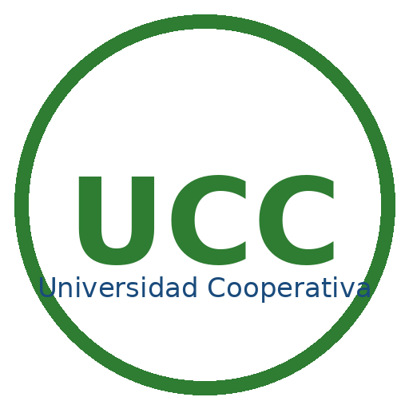

SIRPC · Panel de Revisores
SIB · APA · Rizoma · Registro de visado y observaciones
✅ Revisión de planes
Cada cita es integral, pero cada revisor registra su propio resultado.

SIB · APA · Rizoma · Registro de visado y observaciones
Cada cita es integral, pero cada revisor registra su propio resultado.